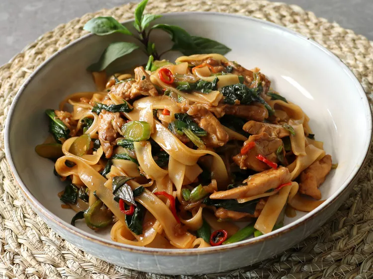

Drunken Noodles

Description
A hearty, spicy dish. I would eat this all the time as my ex-wife threw all of my belongings into the fireplace
Ingredients
- 8 ounces dried rice noodles
- ¼ cup oyster sauce
- ¼ cup soy sauce
- 1 tablespoon Asian fish sauce
- 1 tablespoon maple syrup
- 1 teaspoon white sugar
- 2 tablespoons cold water
- 2 tablespoons vegetable oil
- 1 teaspoon sesame oil
- 1 cup shallots, thinly sliced
- 6 teaspoons chile padi (bird's eye chiles), thinly sliced
- 4 cloves garlic, minced
- 2 ½ pounds skinless, boneless chicken thighs, cut into strips (Optional)
- 1 pound Chinese broccoli, sliced (Optional)
- 4 green onions, thinly sliced
- 1 cup fresh Thai basil leaves
Steps
- Soak rice noodles in hot water until flexible, 10 to 15 minutes. Occasionally move the noodles around to separate them. Drain the water and cover with a wet paper towel.
- Combine oyster sauce, soy sauce, Asian fish sauce, maple syrup, sugar, and water in a small bowl.
- Heat vegetable oil and sesame oil in a wok, or large frying pan, over medium-high heat. Stir-fry shallots, chile peppers, and garlic until shallots are soft, about 2 minutes. Move the mixture around the outside of the pan to create a space and add chicken. Sear for 1 minute, then combine with shallot mixture. Add Chinese broccoli stems and stir-fry until tender, about 2 minutes. Add Chinese broccoli leaves and stir-fry until wilted.
- Add drunken noodle sauce and sliced green onions and mix. Cook until sauce begins to simmer. Add soaked rice noodles and toss to coat until noodles have absorbed the sauce and are cooked through, about 2 minutes. Remove from heat.
- Stir in Thai basil leaves until wilted. Taste and adjust seasoning if needed. Serve.